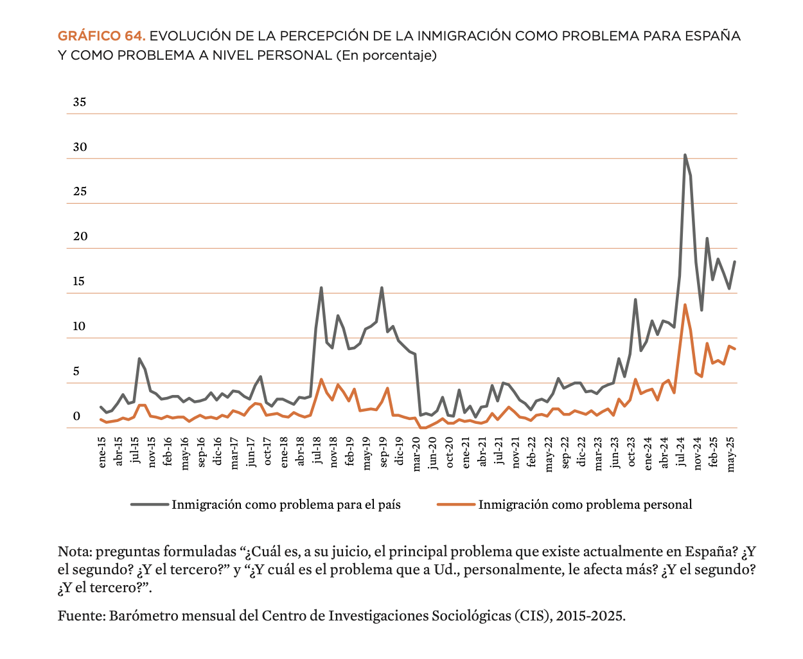
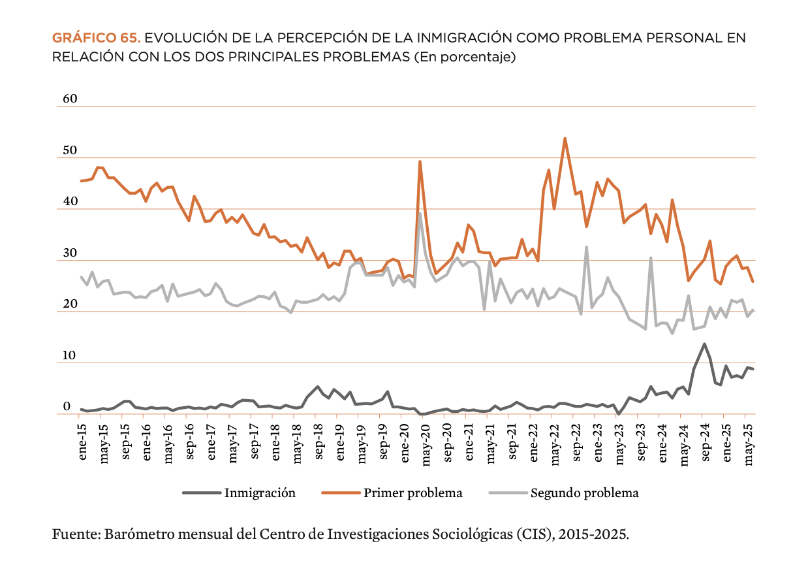
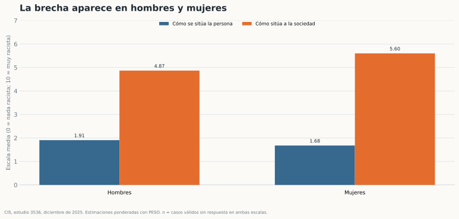
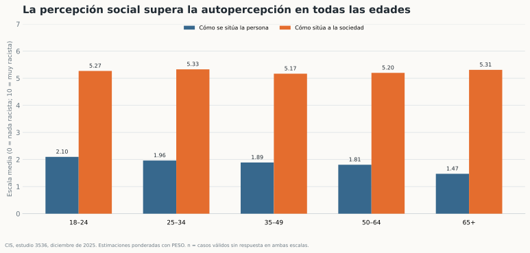
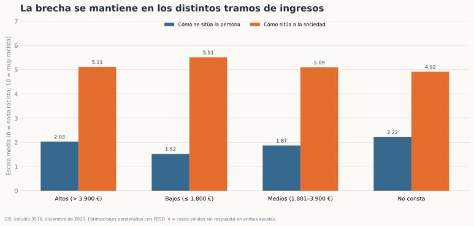
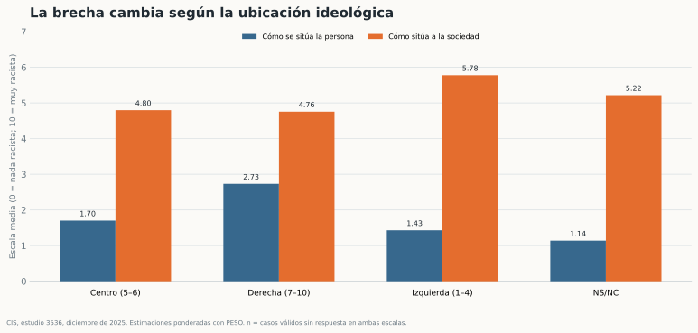
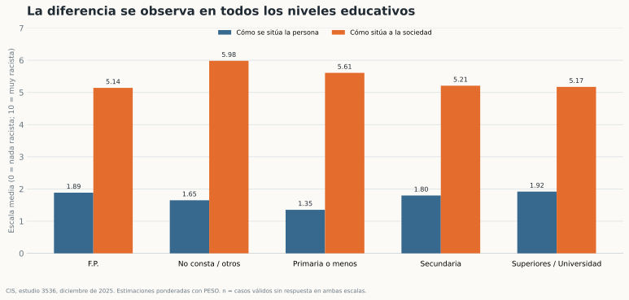

Hipótesis principal
La puntuación media que cada persona atribuye a la sociedad española será más alta que la que se atribuye a sí misma.
¿Qué distancia hay entre cómo nos vemos y cómo vemos a la sociedad?
Una de las características más significativas de los contextos de polarización política, en los que las narrativas de odio cobran fuerza y protagonismo, es su capacidad para condicionar la discusión pública. Incluso los actores sociales y políticos que se posicionan de manera firme contra los discursos estigmatizantes suelen verse obligados a participar en un debate que no promovieron, y, en la mayoría de los casos, buscan alejarse del marco de discusión con silencio o respondiendo de forma reactiva.
Es decir, sin articular una contranarrativa que permita comprender la realidad desde una perspectiva alternativa y, lo que puede ser aún más problemático, adoptando ciertos supuestos que refuerzan los discursos de odio.
En este sentido, desde diferentes espacios académicos y no académicos se han planteado diversas estrategias, no solo para comprender el fenómeno de la desinformación y la propagación de discursos discriminatorios, xenófobos o antiinmigración, sino también para tejer redes y ofrecer formas distintas de entender e interpretar la complejidad del mundo, desactivando marcos carentes de veracidad que buscan señalar culpables fáciles.
La puntuación media que cada persona atribuye a la sociedad española será más alta que la que se atribuye a sí misma.
Comprobar si esa distancia se mantiene por sexo, edad, ingresos, ideología y estudios, usando el peso recomendado por el CIS.
Escala del cuestionario P12: de 0 (nada racista) a 10 (muy racista). Es percepción declarada, no una medida directa de conductas racistas.
4.017
entrevistas realizadas a población de 18 años o más.
Entrevistas telefónicas · 1–5 de diciembre de 2025 · ámbito nacional
Qué hice: revisé las respuestas válidas de P12_1 y P12_2; convertí NS/NC en valores ausentes para las medias; agrupé los perfiles sociodemográficos y calculé medias ponderadas con PESO.
Cómo leerlo: cada barra representa una media en una escala de 0 a 10. La cifra sobre cada barra es la media ponderada. Los gráficos descriptivos no prueban causas ni diferencias estadísticamente significativas.
Fuente: CIS, estudio 3536, ficha técnica y fichero de microdatos. La ficha informa ±1,6 puntos porcentuales para el conjunto bajo muestreo aleatorio simple; el diseño real y los subgrupos tienen incertidumbre distinta.

Gráfico de referencia aportado por el proyecto. Serie atribuida al Barómetro mensual del CIS, 2015–2025. No se reconstruye desde el microdato 3536, que solo cubre diciembre de 2025.

Gráfico de referencia aportado por el proyecto. La línea naranja distingue la mención como primer problema de la mención como segundo problema; no equivale a una medida directa de actitud hacia las personas migrantes.
+3,45
En promedio ponderado, las personas se sitúan en 1,79 y sitúan a la sociedad en 5,24.
Base de casos válidos para ambas respuestas: n = 3.913. Diferencia descriptiva entre dos preguntas distintas del mismo cuestionario.

Brecha: hombres +2,96 puntos · mujeres +3,92. Promedios ponderados. La comparación exploratoria entre mujeres y hombres da t de Welch = 9,97 (p < 0,001); no equivale al contraste global de la brecha.

La autopercepción media disminuye de 2,10 entre 18–24 a 1,47 entre 65+. Brecha más amplia: 65+ (+3,84). n válido varía entre 218 y 1.272.

Agrupaciones del gráfico: bajos ≤1.800 €, medios 1.801–3.900 €, altos >3.900 €. La media del grupo bajo está influida por composición y respuestas; no permite inferir efectos de renta.

Autoubicación en escala ideológica del CIS: izquierda 1–4, centro 5–6, derecha 7–10. La sociedad se evalúa alrededor de 4,8–5,8 puntos. n válido: 775–1.810.

Categorías agregadas a partir de ESTUDIOS. La categoría de primaria o menos tiene menor tamaño (n = 131); interpretar con prudencia.
En este barómetro, la sociedad se percibe como más racista que la propia persona. El patrón aparece en los perfiles comparados.
Que la mayoría de la población sea racista, que un grupo cause el racismo, ni que la brecha implique comportamiento o discriminación observados.
Limitaciones: una sola oleada; respuestas subjetivas; posible deseabilidad social; tamaños desiguales por subgrupo; ponderación de encuesta; agrupaciones analíticas; no se ha estimado causalidad. Las barras no muestran intervalos de confianza.
| Mito | Dato citado en el proyecto | Fuente / cautela |
|---|---|---|
| «No trabajan» | Tasa de actividad extranjera 70,33% frente a española 57,62%. La diferencia requiere considerar la estructura de edad y composición. | EPA, 3T 2026. Verificar la tabla de origen antes de difundir la cifra. |
| «Saturan la sanidad» | El informe citado por Sanidad encuentra hasta 65% más problemas crónicos (3+) entre población nacida en España. El consumo de medicamentos es 62,7% mayor que entre población de origen africano y 50% mayor que entre población latina. | Ministerio de Sanidad, informe 2026 y Barómetro Sanitario. Son indicadores concretos, no una medida total de presión asistencial. |
| «Encarecen la sanidad» | Sanidad concluye que la población migrante contribuye al sistema más de lo que supone su atención. | Ministerio de Sanidad, 2026. Consultar el informe completo y su metodología. |
| «Saturan ayudas» | El 17,5% de titulares del IMV son extranjeros: aproximadamente 1 titular extranjero por cada 4,7 españoles. | Dossier de mayo de 2026. La proporción depende del mes; titular no equivale a persona beneficiaria del hogar. |
Son cifras externas al análisis CIS. La tasa de actividad no es la tasa de empleo. El Excel de altas iniciales acumuladas (junio de 2020–enero de 2026) aporta contexto sobre expedientes y hogares, pero no contiene nacionalidad y no permite calcular el 17,5%. Fuentes: INE · EPA 3T 2026 · Ministerio de Sanidad · informe población migrante · Seguridad Social · titulares IMV.
| Hipótesis / contraste | Resultado ponderado | Conclusión sobre H₀ |
|---|---|---|
| H1 · Ideología La brecha media es igual en izquierda, centro y derecha. | WLS: F(2, 3.774) = 207,87; p < 0,001. Brecha media: izquierda 4,35 · centro 3,10 · derecha 2,02. | Rechazar H₀: la brecha varía entre bloques ideológicos. |
| H2 · Edad y redes La edad es independiente del recuerdo de contenido ofensivo/violento en redes. | χ²(4) = 25,99; p < 0,001; n = 3.676. «Sí» agrupa a menudo / alguna vez; se excluyen no usuarios y NS/NC. | Rechazar H₀: hay asociación en la tabla ponderada. |
| Sexo La brecha media es igual entre mujeres y hombres. | Welch t ≈ 9,97; p < 0,001. Mujeres 3,92 · hombres 2,96 puntos. | Rechazar H₀: brecha mayor entre mujeres. |
| Ingresos, ajustando por ideología Ingresos medios y altos no difieren de los bajos. | WLS: F(2, 3.800) = 45,02; p < 0,001; n = 3.806. | Rechazar H₀: persisten diferencias tras ajustar por ideología. |
Se usa PESO. Contrastes model-based aproximados: el fichero plano no aporta estratos y conglomerados para estimar toda la varianza del diseño CIS. En H2, la suma de pesos se trata como frecuencia: su p-valor es indicativo. Rechazar H₀ no prueba causalidad; análisis exploratorios sin ajuste por pruebas múltiples. Resultados reproducibles en src/data/hipotesis_ponderadas.json.
Este proyecto no es neutral en su punto de partida. Este trabajo quiere dar relato a una minoría que habitualmente no tiene voz, desmitificar el relato de la extrema derecha y el uso político y deshumanizante de la población extranjera, y aportar evidencia frente a los discursos que la señalan como amenaza.
Pero la respuesta no puede ser solo emocional. Como analistas de datos, tenemos la responsabilidad de buscar la información primaria, verificar las fuentes y distinguir las fiables de las que no lo son. Este proyecto es también un ejercicio de eso: acudir al CIS, al INE, al Ministerio del Interior, a OBERAXE y a la EPA, leer los microdatos, aplicar contraste de hipótesis con ponderación y declarar las limitaciones.
Frente al racismo no basta con no ser racista: hay que no participar del racismo, no callar ante la injusticia y no contribuir a la desinformación. Y quien trabaja con datos tiene, además, el deber de saber buscar, contrastar y citar las fuentes primarias para que el relato hegemónico no quede sin respuesta empírica.
El alcance empírico de esta versión se limita al CIS 3536 y a las fuentes externas citadas. OBERAXE, Interior, EPA y otros conjuntos no se han unido a los microdatos de la encuesta.